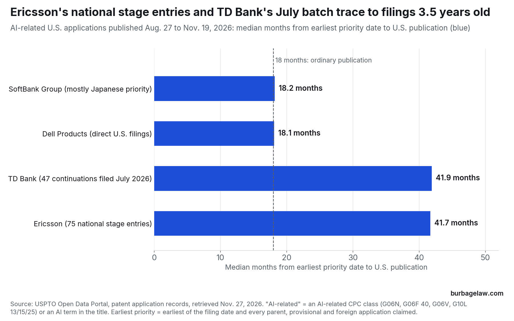

Data · Who is filing on what, edition 8
After SoftBank Group, Ericsson and TD Bank rose fastest among the top 25 AI patent applicants, and most of their new publications trace to filings made years ago
AI-related published U.S. applications by first-named applicant, the 13 weekly publication dates from August 27 to November 19, 2026, against the same weeks of 2025, and how Ericsson’s and TD Bank’s applications reached publication.
Listen · Thinking Makes It So, 2026-11-27 · 7 min
All episodes · Subscribe: Apple Podcasts · Spotify
The short version
The USPTO published 13,165 AI-related patent applications in the 13 weekly publication dates from August 27 to November 19, 2026, against 8,877 in the same weeks of 2025, a rise of 48%. The 25 first-named applicants with the most accounted for 3,828 of them, or 29%. SoftBank Group Corp. was first again, with 618, as it was in edition 2.
After SoftBank Group, which had none a year earlier, the fastest risers in the top 25 were Telefonaktiebolaget LM Ericsson, from 24 to 80, and The Toronto-Dominion Bank, from 30 to 83. They got there by different routes, and most of what they published was first filed years ago. All 80 of Ericsson’s claim a priority date in 2023 or earlier, and 55 of TD Bank’s 83 claim one in 2024 or earlier.
![Dot chart of AI-related published U.S. applications for the top 25 first-named applicants, August 28 to November 20, 2025 compared with August 27 to November 19, 2026: SoftBank Group 0 to 618, Alphabet 242 to 408, Samsung Electronics 174 to 274, Microsoft 209 to 267, Nvidia 131 to 240, NEC 136 to 205, IBM 125 to 164, Dell Products 111 to 163, Qualcomm 103 to 158, Beijing Zitiao (ByteDance) 62 to 116, Apple 98 to 112, Kia 47 to 96, Adobe 61 to 91, Huawei 55 to 90, Oracle 49 to 86, Bank of America 81 to 84, TD Bank 30 to 83, Ericsson 24 to 80, Bosch 77 to 78, Snap 71 to 78, Canon 64 to 76, Honda 61 to 73, LG Electronics 29 to 67, Tencent 53 to 62, Cisco 48 to 59.](2026-11-27-chart1-top-25-ai-applicants.png)
Who is new and who is rising
Six applicants are in this year’s top 25 that were not in last year’s: SoftBank Group, Kia (47 to 96), TD Bank, Ericsson, LG Electronics (29 to 67) and Cisco (48 to 59). Cisco shares 25th place at 59 with Sony Group (26 to 59) and Toyota (55 to 59); the chart shows Cisco, first in alphabetical order. Kia doubled and LG Electronics more than doubled. Capital One, Intel, Fujitsu, Digital Global Systems and Intuit dropped out. Four of the eight large AI companies this series has tracked since edition 1 made the list: Alphabet (408), Microsoft (267), Nvidia (240) and Apple (112).
SoftBank Group’s count has the cause edition 2 found. Of its 618, 532 claim priority to Japanese applications, 466 of them filed in February or March 2025, and Xsensus LLP is the correspondence firm on 556. All but 48 had published by October 15, inside edition 2’s window. Without SoftBank Group, AI-related publications rose 41%, from 8,877 to 12,547.
Dell Products had the largest single week of any top-25 applicant other than SoftBank Group: 69 of its 163 published on October 29. That is the ordinary 18-month clock. Of the 69, 68 trace to first filings Dell made in April 2025, and the same week of 2025 held 26 of Dell’s.
How TD Bank’s count nearly tripled
TD Bank’s rise is one batch. Between July 9 and July 15, 2026, it filed 47 continuation applications from 14 earlier applications, in families first filed between December 2020 and July 2024. Every one of the 47 belongs to a family that already includes an issued U.S. patent. They published between October 29 and November 12, 34 of them on November 5. Leave the batch out and TD Bank published 36 AI-related applications in the window, against 30 a year earlier.
They published fast because their clock had already run. The USPTO publishes an application promptly after 18 months from its earliest priority date (35 U.S.C. 122(b)). These continuations claim dates a median of 41.9 months back, so each published about four months after it was filed.
Nixon Peabody LLP is the correspondence firm on 12 of the July batch, Hopewell IP on 10, TD Bank’s own address on 10 and Marks & Clerk on 8.
My reading is that TD Bank is keeping families open so it can pursue more claims on work it disclosed years ago. In a June 2026 interview with Fintech.ca, TD’s head of patents said the bank had passed 1,000 granted patents and had filed in AI “extensively, and often ahead of the curve.” The records do not say why the bank filed this batch in one week in July, and the bank has not said.
How Ericsson’s count more than tripled
Ericsson’s 80 are late arrivals. Of them, 75 are national stage entries of international (PCT) applications. They entered the United States a median of 29.9 months after their priority dates, at the 30-month deadline, and published a median of 11.7 months after that: 41.7 months, about three and a half years, after the priority date.
The jump is not specific to AI. All of Ericsson’s U.S. publications in the window rose from 258 to 650, and its national stage publications from 174 to 560. The AI-related share went from 9% to 12%. More of Ericsson’s international applications with 2023 priority dates reached U.S. publication this year than applications with 2022 dates did a year earlier. The records do not show why, and I have not found the cause.
These disclosures were public well before their U.S. publication. WIPO publishes an international application promptly after 18 months from its priority date. For example, Ericsson’s U.S. publication 2026/0267778, on using a machine learning model to manage testing in a communications system, published September 10, 2026. Its international application was published as WO 2024/257020 on December 19, 2024.


What it means for in-house counsel
A U.S. publication date says little about when a disclosure became prior art. A published application is prior art for what it describes as of the date that subject matter was effectively filed (35 U.S.C. 102(a)(2)). For a continuation or a national stage entry, that is the filing date of the earliest application it claims priority to or the benefit of, whether a parent, an international or a foreign application, that describes the subject matter (35 U.S.C. 102(d)). Ericsson’s international applications were also printed publications under 35 U.S.C. 102(a)(1) from the day WIPO published them, about two years before their U.S. versions appeared.
For anyone drafting AI applications, the practical point is search scope. Consider whether the novelty searches you rely on before filing cover WIPO publications as well as U.S. ones. When performing a search, search by class, not by keywords alone.
I would not read TD Bank’s count as a surge of new AI work at the bank. Most of it is continuations, which seek new claims on old disclosures. If one of these families matters to you in a transaction or an existing dispute, look at the claims in its pending continuations as well as its issued patents, because those claims can still change.
Method
Data: USPTO Open Data Portal, patent application records, retrieved November 27, 2026. The windows are the 13 weekly publication dates from August 27 to November 19, 2026, and from August 28 to November 20, 2025, by first publication date. The November 26, 2026 publication date was left out because its classification data was still incomplete when the records were retrieved: its records carried about half as many CPC codes as earlier weeks.
Every published utility application in each window carrying a CPC code in G06N, G06F 40, G06V, or G10L 13, 15 or 25, or an AI term in its title, was retrieved and classified with the edition 1 rule: a publication counts as AI-related if it carries one of those CPC codes or its title uses a term such as “machine learning,” “neural network,” “language model” or “generative.” That gave 8,877 AI-related publications in the 2025 window and 13,165 in the 2026 window.
Applicants are counted by first-named applicant only. Spelling, capitalization, punctuation and corporate-suffix variants of the same name are combined after a fuzzy-match search for misspellings. The eight companies from edition 1 are grouped as they were there; Alphabet includes Google LLC, GDM Holding LLC and DeepMind Technologies Limited. Other affiliates are counted separately, as in edition 2. The records list no first-named applicant for 298 AI-related publications in 2025 and 718 in 2026; those are not attributed to anyone. Records change between retrievals: the eight companies total 752 and 1,118 here against 751 and 1,116 in edition 7, which used the same windows, because three records already in edition 7’s pull, one in the 2025 window and two in 2026, have since gained AI-related CPC codes. Cisco Technology, Sony Group Corporation and Toyota Jidosha Kabushiki Kaisha tied for 25th place with 59 each in 2026; the top 25 shown and its total of 3,828 include Cisco, the first of the three alphabetically.
Filing route, priority claims, continuity, correspondence firm and inventors for SoftBank Group, Ericsson, TD Bank and Dell Products come from the same records, pulled by applicant name; that pull found 160 of Dell Products’ 163 AI-related publications, and the Dell week and priority figures are from those 160. The earliest priority date is the earliest of the record’s filing date and the filing dates of every parent, provisional and foreign application it claims. For national stage entries the filing date in the records is the date of entry into the United States. Months are days divided by 30.4375. “Correspondence firm” is the name in the record’s correspondence address.
Two publications were checked in a second source: US 2026/0267778 (Ericsson) on Google Patents, which lists the international publication WO 2024/257020 of December 19, 2024 with the same title, and US 2026/0350227 (TD Bank) on Justia, which shows its July 15, 2026 filing and its continuity back to U.S. application 17/723,957, filed April 19, 2022 and now U.S. Patent 12,411,986. The statements of TD Bank’s head of patents are as reported by Fintech.ca and were not independently confirmed.
Ericsson’s 24 publications in the 2025 window and TD Bank’s 30 are small counts, so their rates of growth should be read with care.
Source: USPTO Open Data Portal · Fintech.ca, “What 1,000 Patents Reveal About TD’s Innovation Strategy” (June 1, 2026) · Google Patents, US 2026/0267778 (Ericsson) · Justia Patents, US 2026/0350227 (TD Bank) · Burbage Law data series, edition 2
Data and citation
You may quote, chart and republish these figures with a citation to this page. Suggested citation:
Jon Burbage, After SoftBank Group, Ericsson and TD Bank rose fastest among the top 25 AI patent applicants, and most of their new publications trace to filings made years ago, Burbage Law: Who Is Filing on What, ed. 8 (Nov. 27, 2026), https://burbagelaw.com/data/2026-11-27-ericsson-td-bank-ai-publications.html
← All data editions · Developments
Burbage Law is the practice of Jon Burbage, a registered patent attorney. 342 United States patents have issued from applications he wrote; the full list is on the Patents page. More about Jon Burbage.
These figures are computed from public USPTO records as described above. They are general information, not legal advice, and do not create an attorney-client relationship.